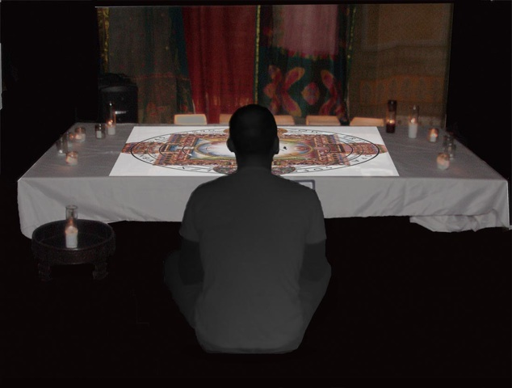

divination 2.0
Size: 10’ x 10’ x 20’
Media: installation, performance
Materials: computer, video projector, camcorder, program in MaxMSPJitter, furniture
4-23-10 Brooklyn, New York. divination 2.0 is an installation that brings the emergent experience of our social/computerized self to a precise space, creating an architectural feeling with video and sound.
Upon entering divination2.0, one sees a glowing round mandala that makes visible and frames commonplace words associated with computers. At the touch of movement near the Mandala, people are invited to meditate in stillness. An on-the-spot-created password typed in causes the program to reply with a Google-generated image response as well as a personalized reading of sociology research on the changing relationship between technology users and culture. This installation was originally shown at 58 North 6th Media Labs in Brooklyn but was later reformatted as a poster for Simposio Internacional de Computacion en la Educacion’s Poster Display in Villahermosa, Tobasco, Mexico in 2012.
Sound design: Nick Nelson
Installation voice: Leda Maniatakou

Introduction video:
or click here